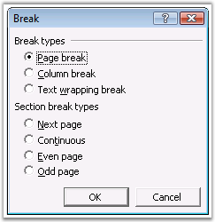
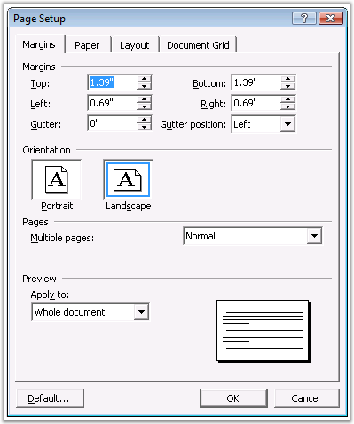

WSection class represents a single section in a document. Every section is a region with its own PageSetup Options, HeadersFooters and Paragraphs Collection.
A valid section must contain at least one empty paragraph. Each section can have its own page setup. Page setup of DocIO section is accessible through the PageSetup property. This property enables user to set page size, orientation, margins, and so on.
DocIO section holds four different collections.
· Paragraphs: collection of section paragraphs
· Tables: collection of section tables
· ChildEntities: collection of child entities (general collection which includes paragraphs and tables)
· Columns: collection of columns, which logically divides a page on many printing / publishing areas
Each section has its own header and footer which is set by using the HeadersFooters property. For more details, see Headers and Footers.
Document sections are divided by section breaks that define where the sections start. This is specified by using the BreakCode property.
· NewColumn: section starts from a new column
· NewPage: section starts from a new page
· EvenPage: section starts on a new even page
· OddPage: section starts on a new odd page
The following screen shot illustrates the breaks accessible through the Insert menu in the MS Word Break dialog box.

Figure 33: Break Dialog Box
The following screen shot illustrates the various page setup options accessible through the File menu in MS Word.

Figure 34: Page Setup Dialog Box
PageSetup properties are listed in the following table.
|
Name |
Description |
|
Bidi |
Gets or sets whether section contains right-to-left text. |
|
Borders |
Gets page borders collection. |
|
ClientWidth |
Gets width of client area. |
|
DefaultTabWidth |
Gets or sets the length of the auto tab. |
|
DifferentFirstPage |
Setting to specify that the current section has a different header / footer for first page. |
|
DifferentOddAndEvenPages |
True if the document has different headers and footers for odd-numbered and even-numbered pages. |
|
FooterDistance |
Gets or sets footer height in points. |
|
HeaderDistance |
Gets or sets height of header in points. |
|
IsFrontPageBorder |
Gets or sets a value indicating whether this instance is front page border. |
|
LineNumberingDistanceFromText |
Gets or sets distance from text in lines numbering. |
|
LineNumberingMode |
Gets or sets line numbering mode. |
|
LineNumberingStartValue |
Gets or sets line numbering start value. |
|
LineNumberingStep |
Gets or sets line numbering step. |
|
Margins |
Gets or sets page margins in points. |
|
Orientation |
Gets or sets orientation of a page. |
|
PageBorderApply |
Gets or sets the value that determine on which pages border is applied. |
|
PageBorderOffsetFrom |
Gets or sets the position of page border. |
|
PageBordersApplyType |
Gets or sets the value that determine on which pages border is applied. |
|
PageSize |
Gets or sets page size in points. |
|
VerticalAlignment |
Gets or sets vertical alignment. |
Public Constructors
|
Name |
Description |
|
WSection.WSection (IWordDocument) |
Initializes a new instance of the WSection class. |
Public Properties
|
Name |
Description |
|
Body |
Gets the section body. |
|
BreakCode |
Gets / sets break code. |
|
ChildEntitiesx |
Gets the child entities. |
|
Columns |
Gets collection of columns, which logically divide page on many printing/publishing areas. |
|
EntityType |
Gets the type of the entity. |
|
HeadersFooters |
Gets headers/footers of current section. |
|
PageSetup |
Gets page Setup of current section. |
|
Paragraphs |
Gets the paragraphs. |
|
Tables |
Gets the tables. |
Public Methods
|
Name |
Description |
|
AddColumn |
Adds new column to the section. |
|
AddParagraph |
Adds the paragraph. |
|
AddTable |
Adds the table. |
|
Clone |
Clones itself. |
|
MakeColumnsEqual |
Makes all columns in current section to be of equal width. |
The following example illustrates how to create a simple Word document, and add sections and breaks to it.
|
[C#]
//Create a new Word document IWordDocument doc = new WordDocument();
IWSection section = doc.AddSection(); IWParagraph paragraph = section.AddParagraph(); paragraph.AppendText("Text Body_Text");
//Set Page break paragraph.ParagraphFormat.PageBreakAfter = true;
paragraph = section.AddParagraph(); paragraph.AppendText("[ After PAGE BREAK ] \rText Body_Text");
section = doc.AddSection();
//Set Section break section.BreakCode = SectionBreakCode.NewPage; paragraph = section.AddParagraph(); paragraph.AppendText("[ After SECTION BREAK ( New page ) ] \rText Body_Text");
section = doc.AddSection();
//Set page setup Options section.PageSetup.Borders.BorderType = BorderStyle.DashLargeGap; section.PageSetup.Borders.Color = Color.DeepPink; section.PageSetup.PageBorderOffsetFrom = PageBorderOffsetFrom.PageEdge; section.PageSetup.Borders.LineWidth = 2; section.BreakCode = SectionBreakCode.NoBreak; paragraph = section.AddParagraph(); paragraph.AppendText("[ After SECTION BREAK ( continuous page ) ] \rText Body_Text"); |
|
[VB.NET]
'Create a new Word document Dim doc As IWordDocument = New WordDocument()
Dim section As IWSection = doc.AddSection() Dim paragraph As IWParagraph = section.AddParagraph() paragraph.AppendText("Text Body_Text")
'Set Page break paragraph.ParagraphFormat.PageBreakAfter = True
paragraph = section.AddParagraph() paragraph.AppendText("[ After PAGE BREAK ] " & Constants.vbCr & "Text Body_Text")
section = doc.AddSection()
'Set Section break section.BreakCode = SectionBreakCode.NewPage paragraph = section.AddParagraph() paragraph.AppendText("[ After SECTION BREAK ( New page ) ] " & Constants.vbCr & "Text Body_Text")
section = doc.AddSection()
'Set page setup Options section.PageSetup.Borders.BorderType = BorderStyle.DashLargeGap section.PageSetup.Borders.Color = Color.DeepPink section.PageSetup.PageBorderOffsetFrom = PageBorderOffsetFrom.PageEdge section.PageSetup.Borders.LineWidth = 2 section.BreakCode = SectionBreakCode.NoBreak paragraph = section.AddParagraph() paragraph.AppendText("[ After SECTION BREAK ( continuous page ) ] " & Constants.vbCr & "Text Body_Text") |
For More Information Refer:
Cloning and Merging, Headers and Footers, Table
 Cloning and Merging
Cloning and Merging